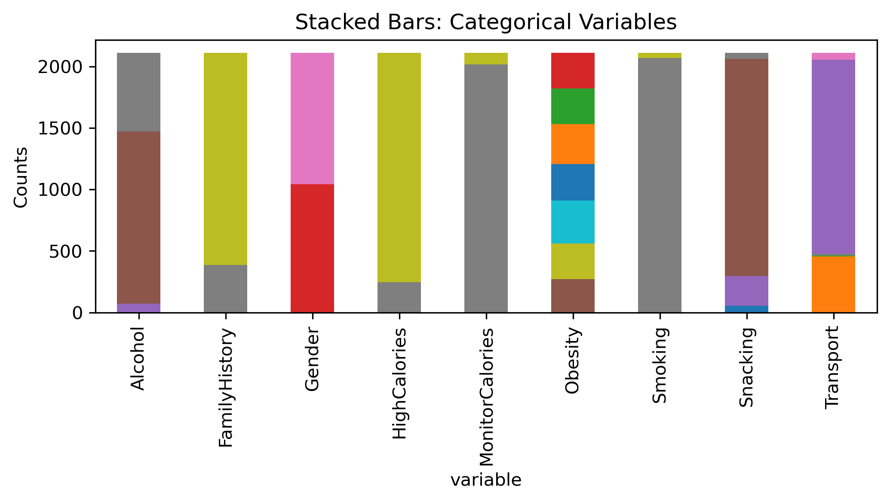
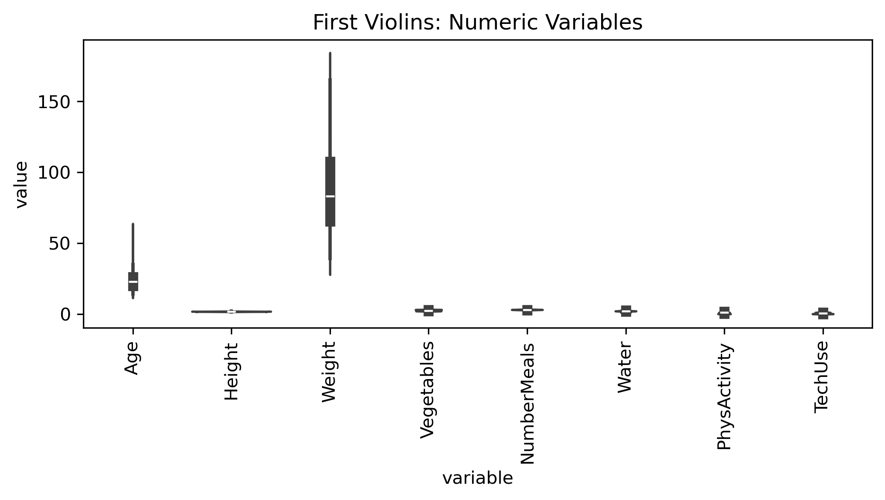
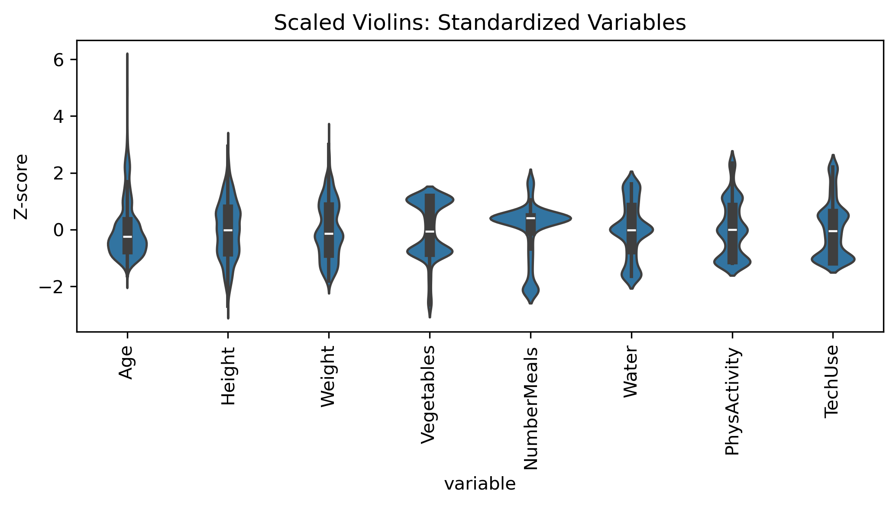
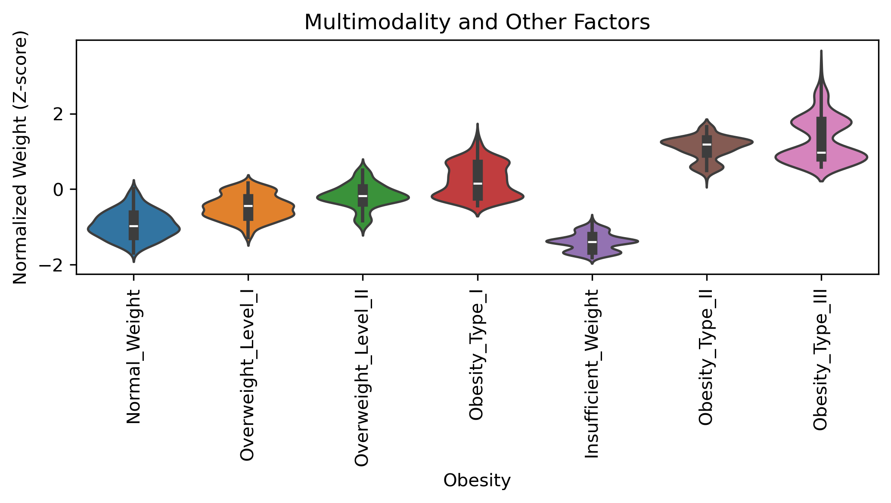
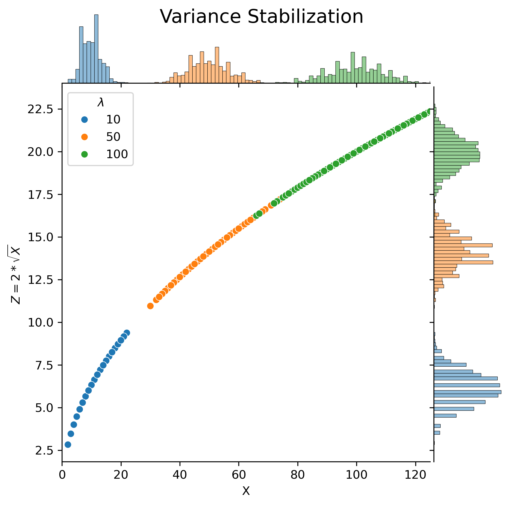
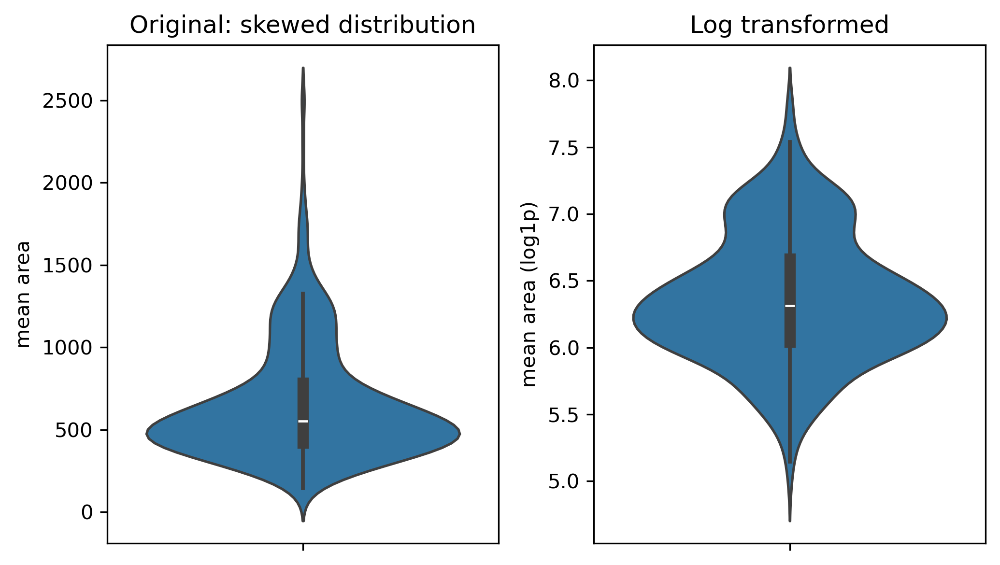
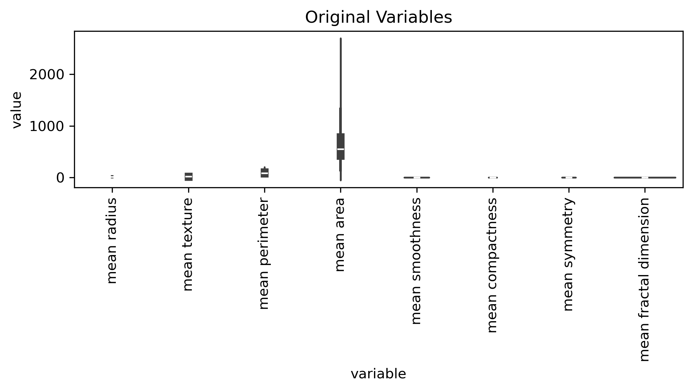
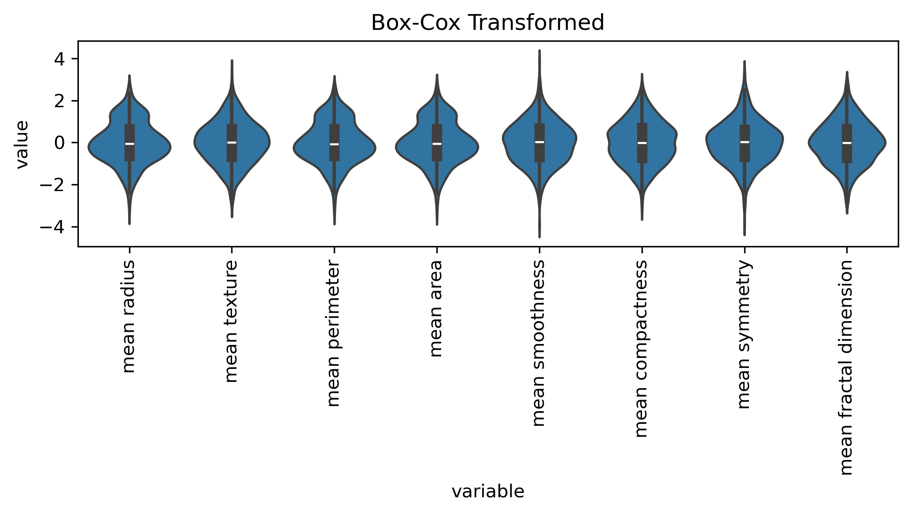

Transforming Numerical Variables
Imports adn Definitions
Obesity Data (Reminder)
The dataset “Estimation of Obesity Levels Based on Eating Habits and Physical Condition” is a collection of data that aims to predict obesity levels based on various factors related to eating habits and physical condition. The dataset includes features such as age, gender. Notice that it has been synthetically augmented using the SMOTE technique to address class imbalance.
References:
- https://www.sciencedirect.com/science/article/pii/S2352340919306985
- https://www.kaggle.com/datasets/aravindpcoder/obesity-or-cvd-risk-classifyregressorcluster
- SMOTE (oversampling of minority): https://www.jair.org/index.php/jair/article/view/10302/24590
Code
type: <class 'ucimlrepo.dotdict.dotdict'>
keys: dict_keys(['data', 'metadata', 'variables'])Code
metadata: {'uci_id': 544, 'name': 'Estimation of Obesity Levels Based On Eating Habits and Physical Condition ', 'repository_url': 'https://archive.ics.uci.edu/dataset/544/estimation+of+obesity+levels+based+on+eating+habits+and+physical+condition', 'data_url': 'https://archive.ics.uci.edu/static/public/544/data.csv', 'abstract': 'This dataset include data for the estimation of obesity levels in individuals from the countries of Mexico, Peru and Colombia, based on their eating habits and physical condition. ', 'area': 'Health and Medicine', 'tasks': ['Classification', 'Regression', 'Clustering'], 'characteristics': ['Multivariate'], 'num_instances': 2111, 'num_features': 16, 'feature_types': ['Integer'], 'demographics': ['Gender', 'Age'], 'target_col': ['NObeyesdad'], 'index_col': None, 'has_missing_values': 'no', 'missing_values_symbol': None, 'year_of_dataset_creation': 2019, 'last_updated': 'Tue Sep 10 2024', 'dataset_doi': '10.24432/C5H31Z', 'creators': [], 'intro_paper': {'ID': 358, 'type': 'NATIVE', 'title': 'Dataset for estimation of obesity levels based on eating habits and physical condition in individuals from Colombia, Peru and Mexico', 'authors': 'Fabio Mendoza Palechor, Alexis De la Hoz Manotas', 'venue': 'Data in Brief', 'year': 2019, 'journal': None, 'DOI': '10.1016/j.dib.2019.104344', 'URL': 'https://www.semanticscholar.org/paper/35b40bacd2ffa9370885b7a3004d88995fd1d011', 'sha': None, 'corpus': None, 'arxiv': None, 'mag': None, 'acl': None, 'pmid': None, 'pmcid': None}, 'additional_info': {'summary': 'This dataset include data for the estimation of obesity levels in individuals from the countries of Mexico, Peru and Colombia, based on their eating habits and physical condition. The data contains 17 attributes and 2111 records, the records are labeled with the class variable NObesity (Obesity Level), that allows classification of the data using the values of Insufficient Weight, Normal Weight, Overweight Level I, Overweight Level II, Obesity Type I, Obesity Type II and Obesity Type III. 77% of the data was generated synthetically using the Weka tool and the SMOTE filter, 23% of the data was collected directly from users through a web platform.', 'purpose': None, 'funded_by': None, 'instances_represent': None, 'recommended_data_splits': None, 'sensitive_data': None, 'preprocessing_description': None, 'variable_info': 'Read the article (https://doi.org/10.1016/j.dib.2019.104344) to see the description of the attributes.', 'citation': None}}
data(shape): (2111, 17)
variables: name role type demographic \
0 Gender Feature Categorical Gender
1 Age Feature Continuous Age
2 Height Feature Continuous None
3 Weight Feature Continuous None
4 family_history_with_overweight Feature Binary None
5 FAVC Feature Binary None
6 FCVC Feature Integer None
7 NCP Feature Continuous None
8 CAEC Feature Categorical None
9 SMOKE Feature Binary None
10 CH2O Feature Continuous None
11 SCC Feature Binary None
12 FAF Feature Continuous None
13 TUE Feature Integer None
14 CALC Feature Categorical None
15 MTRANS Feature Categorical None
16 NObeyesdad Target Categorical None
description units missing_values
0 None None no
1 None None no
2 None None no
3 None None no
4 Has a family member suffered or suffers from o... None no
5 Do you eat high caloric food frequently? None no
6 Do you usually eat vegetables in your meals? None no
7 How many main meals do you have daily? None no
8 Do you eat any food between meals? None no
9 Do you smoke? None no
10 How much water do you drink daily? None no
11 Do you monitor the calories you eat daily? None no
12 How often do you have physical activity? None no
13 How much time do you use technological devices... None no
14 How often do you drink alcohol? None no
15 Which transportation do you usually use? None no
16 Obesity level None no Encoding Variable Names
Ideally we would want to have some coding standards for variable names (i.e. ICD-10, Snomed CT, …). Below I simply want to avoid long variable names and incomprehensible abbreviations.
Code
var_dict = {
"family_history_with_overweight": "FamilyHistory",
# Frequent consumption of high caloric food (yes/no)
"FAVC": "HighCalories",
"FCVC": "Vegetables",
"NCP": "NumberMeals",
"CAEC": "Snacking",
"SMOKE": "Smoking",
"CH2O": "Water",
"SCC": "MonitorCalories",
"FAF": "PhysActivity",
"TUE": "TechUse",
"CALC": "Alcohol",
"MTRANS": "Transport",
"NObeyesdad": "Obesity"
}
df.rename(columns=var_dict, inplace=True)Data Exploration
Numeric summaries
Code
Missing Values: 0
Data Types:
Gender object
Age float64
Height float64
Weight float64
FamilyHistory object
HighCalories object
Vegetables float64
NumberMeals float64
Snacking object
Smoking object
Water float64
MonitorCalories object
PhysActivity float64
TechUse float64
Alcohol object
Transport object
Obesity object
dtype: object
Data Descriptions:
Age Height Weight Vegetables NumberMeals \
count 2111.000000 2111.000000 2111.000000 2111.000000 2111.000000
mean 24.312600 1.701677 86.586058 2.419043 2.685628
std 6.345968 0.093305 26.191172 0.533927 0.778039
min 14.000000 1.450000 39.000000 1.000000 1.000000
25% 19.947192 1.630000 65.473343 2.000000 2.658738
50% 22.777890 1.700499 83.000000 2.385502 3.000000
75% 26.000000 1.768464 107.430682 3.000000 3.000000
max 61.000000 1.980000 173.000000 3.000000 4.000000
Water PhysActivity TechUse
count 2111.000000 2111.000000 2111.000000
mean 2.008011 1.010298 0.657866
std 0.612953 0.850592 0.608927
min 1.000000 0.000000 0.000000
25% 1.584812 0.124505 0.000000
50% 2.000000 1.000000 0.625350
75% 2.477420 1.666678 1.000000
max 3.000000 3.000000 2.000000 Large descriptive tables are not very useful!
Different data types require different exploration techniques. We can separate the numeric and categorical variables to explore them separately.
Data Visualization
Code
num_long = df[num_cols].melt(var_name="variable", value_name="value")
cat_long = df[cat_cols].melt(var_name="variable", value_name="level").value_counts().unstack(fill_value=0)
plt.figure(figsize=FIGSIZE)
cat_long.plot(kind="bar", stacked=True, figsize=FIGSIZE, legend=False)
plt.ylabel("Counts")
plt.xticks(rotation=90)
plt.title("Stacked Bars: Categorical Variables")
plt.tight_layout()
plt.show()
plt.figure(figsize=FIGSIZE)
sns.violinplot(data=num_long, x="variable", y="value")
plt.xticks(rotation=90)
plt.title("First Violins: Numeric Variables")
plt.tight_layout()
plt.show()<Figure size 1050x600 with 0 Axes>

In general variables are not comparable and have different units.
- Why is this a problem?
- What should be done before we proceed?
Variable Transformations
Scaling (numerical variables)
The most common normalizations techniques are Standardization/Normalization
\[ X \to Z = \frac{X - \mu}{\sigma} \]
and Min-Max scaling: \[ X \to Z = \frac{X - X_{min}}{X_{max} - X_{min}} \]
Inverse Scaling
Scale transformations are invertible
\[ X = Z \sigma + \mu \]
or
\[ X = Z (X_{max} - X_{min}) + X_{min} \]
Code
Scaling is invertibleCode
num_norm = (
pd.DataFrame(Z, columns=num_cols)
.melt(var_name="variable", value_name="value")
)
plt.figure(figsize=FIGSIZE)
sns.violinplot(data=num_norm, x="variable", y="value")
plt.xticks(rotation=90)
plt.ylabel("Z-score")
plt.title("Scaled Violins: Standardized Variables")
plt.tight_layout()
plt.show()
- Z- or MinMax scaling does not change shape of distribtuion
- it only shifts the mean and changes the scale
- Z is dimensionless
- Standardization centers data around mean=0 and scales to unit variance (std=1)
- Useful for algorithms that depend on distances between samples (e.g. clustering)
What could be the reason that not all distributions are unimodal?
Often variables do not show Gaussian (Normal) Distributions:
- outliers? measurement errors?
- non-Gaussian processes: (multiplicative) growth (e.g population size, income distribution, …)
- integers: discrete values (e.g. count data, age in years)
- multimodality: other variables (i.e not just random noise)?
Code
df_norm = pd.DataFrame(Z, columns=num_cols)
df_norm["Obesity"] = df["Obesity"]
plt.figure(figsize=FIGSIZE)
sns.violinplot(data=df_norm, x="Obesity", y="Weight", hue="Obesity")
plt.xticks(rotation=90)
plt.ylabel("Normalized Weight (Z-score)")
plt.title("Multimodality and Other Factors")
plt.tight_layout()
plt.show()
Other Transformations
Sqrt-Transformation
Count data often follows a Poisson distribution with some parameter \(\lambda\)
\[ P(X=k) = \frac{\lambda^k e^{-\lambda}} {k!} \]
For this distribution the variance increases with the mean \[ Var(X) = E[X] = \lambda \] This is undesirable as large expected counts tend to have larger variance
For a general variable transformation \(x \to z=f(x)\) we have
\[ Var(Z) = |f'(x)|^2 Var(X) \]
It turns out that square-root transformations can stabilize the variance
\[ z = 2 \sqrt{x} \to Var(Z) = 1 \]
Code
rng = np.random.default_rng(42)
# generate Poisson data with 3 means (lambdas)
N = 1000 # number of observations
lambdas = [10, 50, 100]
# define groups g with mean mu
df = pd.DataFrame({"g": np.repeat(lambdas, N)})
# x-values drawn from Poisson
df["x"] = np.concatenate([
rng.poisson(lam=l, size=N) for l in lambdas
])
# y-values from transformation
df["y"] = 2 * np.sqrt(df["x"])
df["g"] = df["g"].astype(str)
def marginal_scatter(data, ylabel):
g = sns.JointGrid(
data=data,
x="x",
y="y",
height=6,
ratio=5,
space=0.05
)
sns.scatterplot(
data=data,
x="x",
y="y",
hue="g",
ax=g.ax_joint
)
sns.histplot(
data=data,
x="x",
hue="g",
bins=100,
ax=g.ax_marg_x,
legend=False
)
sns.histplot(
data=data,
y="y",
hue="g",
bins=100,
ax=g.ax_marg_y,
legend=False
)
g.figure.suptitle("Variance Stabilization", fontsize=16)
g.ax_joint.set_xlim(0, 125)
g.ax_joint.set_xlabel("X")
g.ax_joint.set_ylabel(ylabel)
g.ax_joint.legend(title=r"$\lambda$", loc="best")
return g
g1 = marginal_scatter(df, r"$Z = 2*\sqrt{X}$")
plt.show()
Real World Example: Number of Medications
This is from a large dataset for diabetes patients
Code
# large dataset of patients diagnosed with diabetes (130 US hopsitals)
# paper: https://onlinelibrary.wiley.com/doi/10.1155/2014/781670
dataset = fetch_ucirepo(id=296)
# of interest here are the number of medications
VAR="num_medications"
VAR_TRANS="num_medications_sqrt"
X = pd.DataFrame({
VAR: dataset.data.features[VAR],
VAR_TRANS: 2*np.sqrt(dataset.data.features[VAR]) # sqrt-transform
})Log-Transformation
Other common transformations include log transformation which can also be applied to skewed data.
This can be expected when data derives from multiplicative growth processes (population, wealth, cancer etc.). This frequently gives rise to log-normal distribution with large skew.
Example: Mean Area (for breast cancer samples)
Code
from sklearn.datasets import load_breast_cancer
df = load_breast_cancer(as_frame=True).frame
VAR="mean area"
VAR_TRANS = "mean area (log1p)"
X = pd.DataFrame({
VAR: df[VAR],
VAR_TRANS: np.log1p(df[VAR])
})
fig, ax = plt.subplots(1, 2, figsize=FIGSIZE)
sns.violinplot(data=X, y=VAR, ax=ax[0])
ax[0].set_title("Original: skewed distribution")
sns.violinplot(data=X, y=VAR_TRANS, ax=ax[1])
ax[1].set_title("Log transformed")
plt.tight_layout()
plt.show()
Appendix: Box-Cox Transformation
a generalization of Log-transformation is the Box-Cox transformation (for strictly positive data)
\[ y = x(\lambda) = \begin{cases} \frac{x^\lambda - 1}{\lambda} & \text{if } \lambda \neq 0 \\ \log(x) & \text{if } \lambda = 0 \end{cases} \]
Frequently Box-Cox transformed are also standardized \(x \to y \to z\)
Filter: Select numeric data with positive values
Box-Cox (sklearn): Determine optimal \(\lambda\)
Code
from sklearn.preprocessing import PowerTransformer
# Box-Cox transform (default: ,standardize=True)
pt = PowerTransformer(method="box-cox")
X_bc = pt.fit_transform(X)
# get optimal lambdas
lambda_df = pd.DataFrame({"var": X.columns, "lambda": pt.lambdas_})
print(f'Best BC-parameters:\n {lambda_df}')
# sanity check: inverse transformation
X_orig = pt.inverse_transform(X_bc)
if np.testing.assert_allclose(X, X_orig) is None:
print("Transformation is invertible")Best BC-parameters:
var lambda
0 mean radius -0.462994
1 mean texture 0.021525
2 mean perimeter -0.463569
3 mean area -0.211072
4 mean smoothness 0.135633
5 mean compactness 0.026828
6 mean symmetry -0.316203
7 mean fractal dimension -2.460281
Transformation is invertibleBox-Cox (Visualization)
Code
# melt dfs for visualization
num_orig = X.melt(var_name="variable", value_name="value")
num_bc = (
pd.DataFrame(X_bc, columns=X.columns)
.melt(var_name="variable", value_name="value")
)
plt.figure(figsize=FIGSIZE)
sns.violinplot(data=num_orig, x="variable", y="value")
plt.xticks(rotation=90)
plt.title("Original Variables")
plt.tight_layout()
plt.show()
plt.figure(figsize=FIGSIZE)
sns.violinplot(data=num_bc, x="variable", y="value")
plt.xticks(rotation=90)
plt.title("Box-Cox Transformed")
plt.tight_layout()
plt.show()

- transformations are data engineering \(\to\) design choices
- no formal rules: subject expertise & iterations!
- guiding principles: scaling, variance stabilization, symmetric residuals
- make variable more comparable, adjust for units, help reveal pattern
- make some assumptions: additive or multiplicative
- success is based on interpretability
- general transformations \(x \to z\) may change shape of distribution